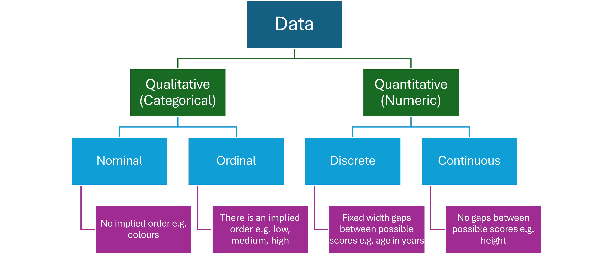

Chapter 2 Data Concepts
Learning Objectives
To uderstand the basic types of data
To understand how data is structured for statistical analysis
To determine the amount of data required for a scientific study
To investigate methods of data collection
To distinguish between primary and secondary sources
To review some secondary sources of scientific data
To learn the steps in preparing data for statistical analysis
2.1 Types of Data

Count data is quantitative discrete data in which the number of occurrences of something are recorded e.g. the number of birds in migratory flocks.
2.2 The Structure of Data
Data should be structured using tables in which
- each column represents a variable
- the values in each column are the same type and the same unit
- the first row contains the names of the variables without any spaces
The data in each row represents a single observation of the variables. Observations are often called records or cases, depending on the context of the study. Similarly, columns are often called attributes or features.
2.2.2 Activity
- List the variables and the type of data they represent for the following data set.
- Write down one observation from the table.
Sepal.Length Sepal.Width Petal.Length Petal.Width Species
5.9 3.0 5.1 1.8 virginica
5.5 4.2 1.4 0.2 setosa
7.1 3.0 5.9 2.1 virginica
6.3 2.8 5.1 1.5 virginica
5.8 2.6 4.0 1.2 versicolor
5.8 4.0 1.2 0.2 setosa2.3 Collecting Data
Data sources can be classified as either primary or secondary.
Primary Source Data is collected by the researcher through first-hand surveys. Secondary Source Data is collected from existing data repositories.
2.3.1 Sample Size - How Much Data Is Enough?
Estimating the sample size for a research project is important because
- sample size needs to be large enough to detect the expected effect if it’s present
- a sample that is too large is wasteful of resources or could be unethical
- the study might not be feasible if a large sample size is required.
Estimating sample size depends on
- the objective(s) of the research
- the type of statistical tests or modelling that will be applied
- the type of study design e.g. experimental versus observational studies
- if the target outcome is a rare case
Sample size can be estimated using software tools or, for situations where less scientific rigor is required, by rules of thumb.
The following definitions are beyond the scope of the Science Extension course, but you might come across them in your research when estimating the sample size required for your project.
Definitions Type I Error - rejecting a true null hypothesis (false positive - accepting there is a significant effect when there isn’t one)
Type II Error - not rejecting a false null hypothesis (false negative - missing a significant effect when there is one)
Power - the ability of a statistical test to detect an effect given that the effect exists. Formal definition: \(\text{Power} = 1 - \text{P(Type II Error)}\)
2.3.2 Large Data Sets
Large data sets have become commonplace since the advent of the internet and increasingly powerful computers. While these data sets provide the ability to work with very large samples, they introduce the problem of “information overload”. Too much data can be as big a problem as too little data!
To overcome some of the problems associated with large data sets, they are increasingly available online along with the ability to process the data using cloud computing. This makes the task of working with large data sets more achievable for individuals and smaller institutions.
2.3.3 Activity - Online Data Repositories
Explore the following data repositories and complete the table.
| Repository | Main Uses | Formats | Cloud Processing (y/n) |
|---|---|---|---|
| ABS | |||
| data.gov.au | |||
| SEED NSW | |||
| Digital Earth Australia | |||
| Atlas of Living Australia |
2.4 Data Cleaning
Most data needs preparation or “cleaning” before statistical analysis can begin.
There is an expression that says “10 percent inspiration, 90 percent perspiration”. In the case of statistics, preparing data for analysis is often the “90 percent perspiration”! Most real-world data sets will need a lot of cleaning before they are suitable for use in a research project.
Some of the issues that need to be checked and remedied are
- missing values, often labelled as NA, but might just be blank - impute, drop, or ignore?
- incorrect number formats e.g. differing numbers of decimal places, missing decimal points: 1.02, 1.15, 103, 1.96
- units included in quantitative columns e.g. 9.1, 3.2, 5.8mm, 6.7
- Not the correct number of rows e.g. your data set should have 1000 rows, but it only has 100 when you open it
- duplicate categories in qualitative variables e.g. dog, cat, cat, dogs, cats
- dates and times are not recognised correctly by the software
- outliers
- zero inflated count data e.g. the number of daily observations of a rare species will often be 0
- duplicate records
- removing irrelevant variables; finding the relevant ones amongst hundreds
- variables that have only one value or are empty
- metadata added at the beginning or end of data tables exported from secondary sources - always check the end of the data for unwanted additions!
- empty rows, cells, merged cells in spreadsheets :(
… and the list goes on.
Tip
For a small project where you are working alone or in a small team, avoid most of these problems by developing a thorough plan and keeping accurate records. Do not change your methods once you have started recording data.
2.4.1 Activity
Open the introduced_plants.csv data set in a spreadsheet. The objective of this study is to identify the top 10 most frequently recorded introduced plant species in the study area (Blackheath, NSW), and to plot a map of these observations. Find any issues with the data and decide what should be done to prepare the data for the intended analysis.